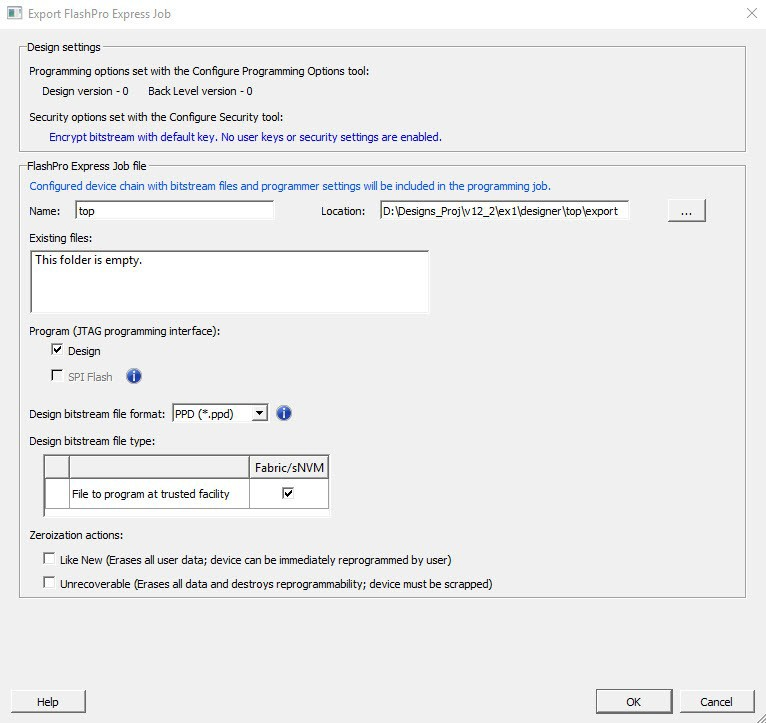
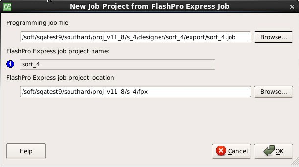

13.1.3 Getting Started
(Ask a Question)This section describes how to get started using FlashPro Express.
13.1.3.1 Starting FlashPro Express
(Ask a Question)FlashPro Express software is available in the <Libero SoC installation folder>\bin folder. Execute the FPExpress file to launch the FlashPro Express software.
13.1.3.2 FlashPro Express Interface
(Ask a Question)The main FlashPro Express UI consists of a list of programmers and a chain table. This view displays the programmers connected to the machine, and the devices within the JTAG chain (Figure 4-1) or a single device with SPI Target interface (Figure 4-2) specified in the job project file (PRO) file.
The following table describes the FlashPro actions you can perform. Devices specified as
disabled in the job project (*.pro) file are shown disabled and their
HighZ value appears in the column header.
| To... | Perform This Action... |
|---|---|
| Display more information about a programmer. | Hover over the programmer Info icon. |
| Change a programmer name. | Click the Name field. |
| Enable or disable a programmer. | Click the check box. |
| Ping, Self-Test, Scan, Check Chain, or Remove it from the list. | Right-click a programmer. |
| View additional information about a device and programming file, if loaded. | Hover over the info icon of that device. |
The following table describes the device/programmer states.
| Device/Programmer State | Description |
|---|---|
| IDLE | Devices and programmers are idle and not executing any programming action. |
| DISABLED | Devices that are not enabled for programming. |
| PASSED | Last programming operation passed. |
| FAILED | Last programming operation failed. |
13.1.3.3 Creating a Job Project from a FlashPro Express Job
(Ask a Question)When you are ready to hand off your design for production, create a job project.
- In Libero, run Export FlashPro Express
Job to create a container that will be used to transfer programming
configuration information, including programming files, to the production
programming tool FlashPro Express.
Figure 13-5. Export FlashPro Express Job  - In FlashPro Express, from the Project menu, choose New Job Project.
- When prompted, specify the Programming Job file location that you just exported from Libero and the location to store the FlashPro Express job project. The job project name uses the programming job name and cannot be changed. Click OK to create and open a new job project for production programming.
In Developer mode, a new job project can also be created using Construct automatically option. This option can be used to construct chain by scanning the physical chain connected to the selected programmer. This feature is available only in JTAG mode. If multiple programmers are connected to the machine, select the desired programmer by clicking on the pull down menu for connected programmers field.
13.1.3.4 Opening a Job Project
(Ask a Question)To start with FlashPro Express, load a job project (*.pro) file.
A job project opens if:
- At least one programmer is connected.
- At least one Microchip device is enabled for programming (Required for Operator Mode).
- Any enabled Microchip device for programming has a bitstream file loaded.
To open a job project:
- From the Project menu, choose Open Job Project. The Open Project dialog box appears.
- Find your project file or type in your project file name in the File name field.
- Click Open.
13.1.3.5 Saving a Job Project
(Ask a Question)- Click the Save button on the toolbar, or
- From the Project menu choose Save Job Project.
13.1.3.6 Programming Tutorials
(Ask a Question)The following programming tutorials describe real-world examples of using FlashPro.
13.1.3.6.1 Parallel Programming with FlashPro5/4/3/3X
(Ask a Question)Parallel programming allows you to program multiple Microchip devices in parallel with multiple programmers. In parallel programming, all targeted devices are programmed with the same programming file (STAPL). The targeted device or chain configuration that is connected to each programmer must be identical.
The FlashPro Express software together with the FlashPro5/4/3/3X programmers supports parallel programming via a USB port. You can connect up to sixteen FlashPro5/4/3/3X's to a PC via a USB v1.1 or a USB v2.0 port.
FlashPro5/4/3/3X requires a self-powered hub.
Connecting FlashPro5/4/3/3X (a USB v2.0 enabled programmer) to USB v1.1 port increases device programming time due to a slow data transfer rate on the USB v1.1 port in comparison to a USB v2.0 port.
The following figure shows how to connect a FlashPro5/4/3/3X programmer for parallel programming.
An independent thread processes the STAPL file during parallel programming. In a Microchip test environment, parallel programming is approximately five times faster than programming 16 devices sequentially.
13.1.3.6.2 Chain Programming Tutorial
(Ask a Question)This tutorial describes how to use FlashPro Express to program a multi-device, multi-programmer chain. This tutorial uses the production programming flow that exports a programming job from Libero SoC, which includes chain configuration, programmer settings, and bit stream files for programming, and creates a job project from a programming job.
- Device 1 is the first device to be programmed in the chain.
- Device 2 is the last device to be programmed in the chain.
- Device 3 is disabled and will not be programmed.
To program a chain:
- From the Project menu, choose New Job Project from FlashPro Express Job.
- Click Browse
to load a Programming Job File, and specify your FlashPro
Express job project location. Click OK to
continue, as shown in the following figure.
Figure 13-11. New Job Project from FlashPro Express Job FlashPro Express displays your Job Project and programmers, as shown in the following figure. The Device/Programmer states are:
- IDLE: Devices/programmers are idle and not executing any programming action.
- DISABLED: Devices that are not enabled for programming.
- PASSED: Last programming operation passed.
- FAILED: Last programming operation failed.
Figure 13-12. FlashPro Express with Loaded Job Project (JTAG Example) Figure 13-13. FlashPro Express with Loaded Job Project (SPI Target Example – SmartFusion 2/IGLOO 2 Only) - If your programmer is not listed, click the Refresh/Rescan button. To view device info, hover your mouse over the Info icon. If a device is Disabled for programming, the HighZ status appears in the GUI.
- Set the Programming Action in the
drop-down menu to PROGRAM, as shown in the following
figure.
Figure 13-14. Programming Action Set to PROGRAM 
- Click RUN.
Detailed individual programmer and device status information appears in the
Programmer List. Your programmer status (PASSED or FAILED) appears in the Programmer
Status Bar, as shown in the following figure.
- Hover over the Programmer Status Bar to display information on the programmers.
- Hover over the FAILED status to list all programmers that failed programming.
- Hover over the PASSED status to list all the programmers that programmed successfully.
Figure 13-15. Chain Programming Complete 
- View the Log for Messages, Errors, Warnings and Info generated during programming.